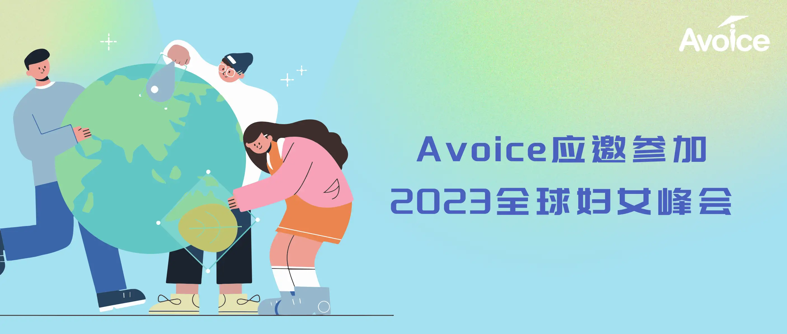

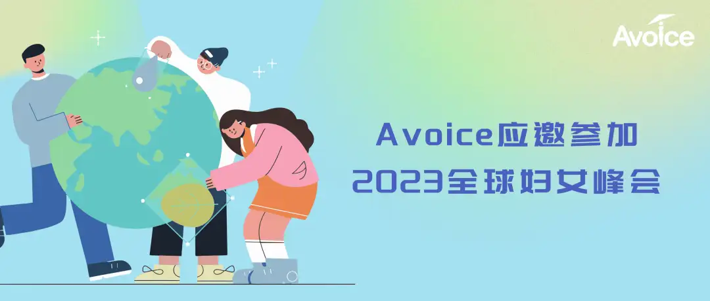

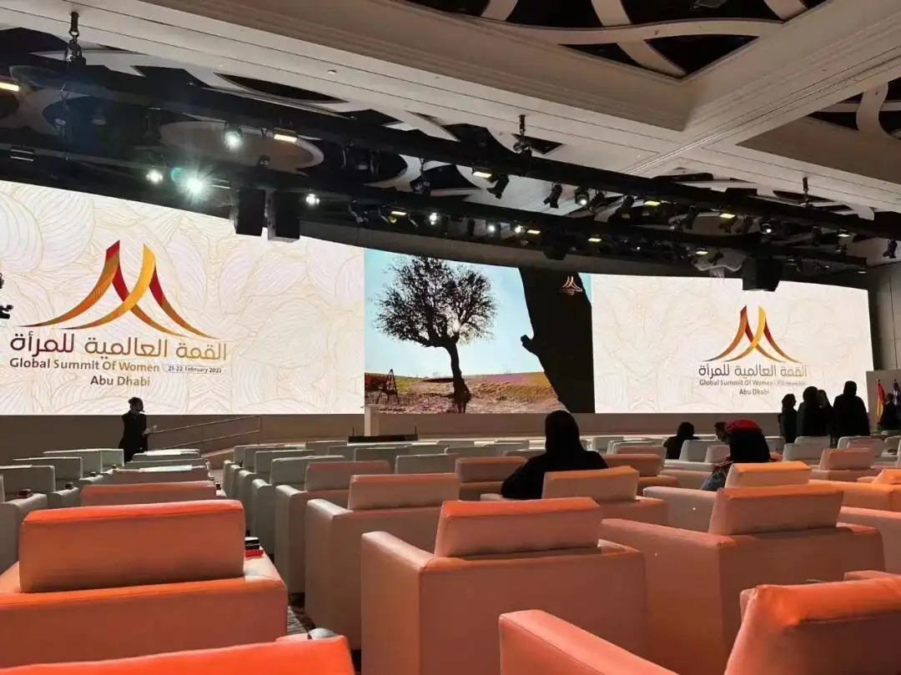
由阿联酋妇女联盟与世界穆斯林社区理事会共同主办的第一届全球妇女峰会于阿拉伯联合酋长国首都阿布扎比成功举办。此次峰会由阿联酋妇女联盟主席、母亲与儿童最高委员会主席、家庭发展基金会最高主席、国母(Mother of the Nation)谢赫·法蒂玛·本特·穆巴拉克殿下主持，庆祝自上世纪初以来女性在争取政治权力过程中所取得的重大成就。
峰会上，来自100多个国家的250余名杰出女性政治家、宗教领袖、企业家、社会活动家、文化界人士、媒体名人和学者，共同讨论女性在历史关键时期所面临的诸多挑战，探讨女性领导人在推动世界和平、社会融合、经济发展及其他领域中的重要作用。
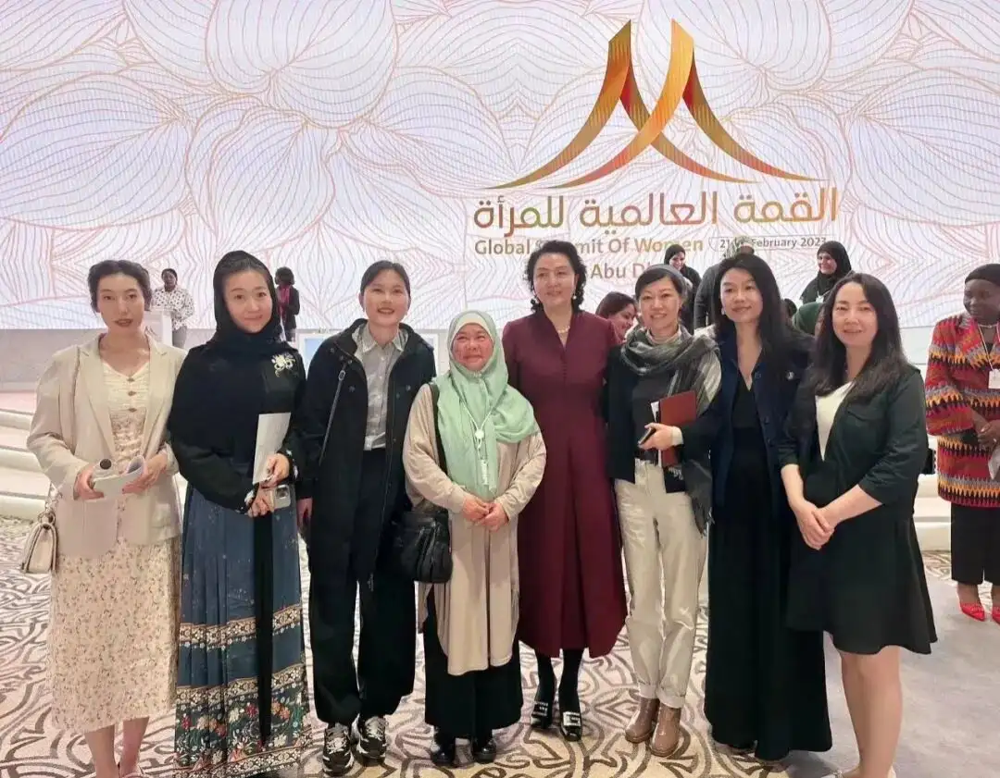
Avoice作为首个针对海外华人女性保护的项目受邀参加本次峰会，作为现场为数不多的华人组织，Avoice全程积极参与对话，将推动性别平等与女性赋能的美好愿景传递给来自世界各国同样关注、参与性别平等与女性赋能的与会者们，其中也包括来自世界各地的组织与专家们。
在此次峰会中，Avoice有幸与众多机构和专家沟通交流并取得联系合作，如塞尔维亚副总理兼性别平等协调机构主席Maja Gojković、纽约大学阿布扎比分校副校长Mariett Westermann、美国夏威夷大学希洛分校亚洲研究客座教授Jackie Armijo、柬埔寨妇女事务部国务秘书Man Chinda、亚太交流与合作基金会常务副主席肖武南等，为未来Avoice与更多国家和地区的政府部门及救助、慈善机构的合作建立基础。
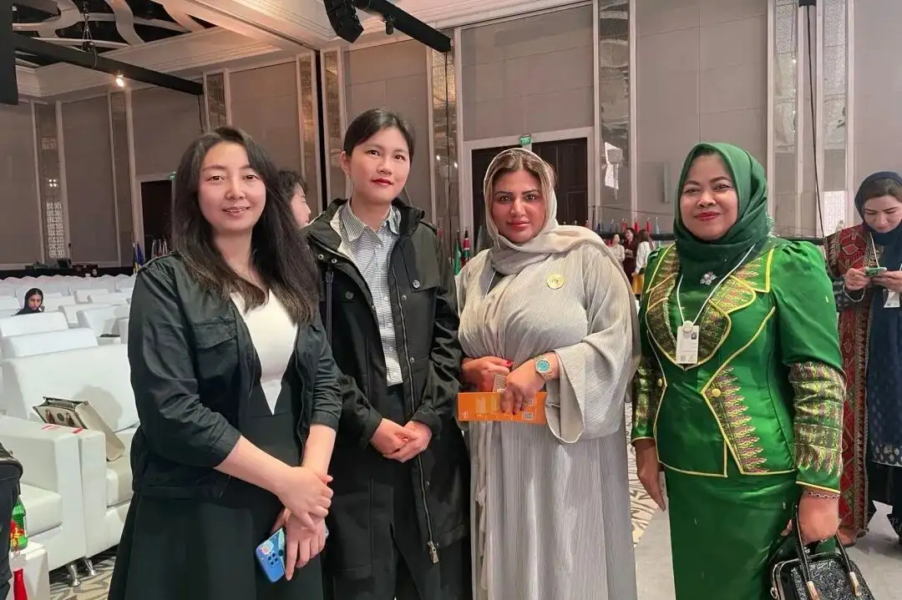
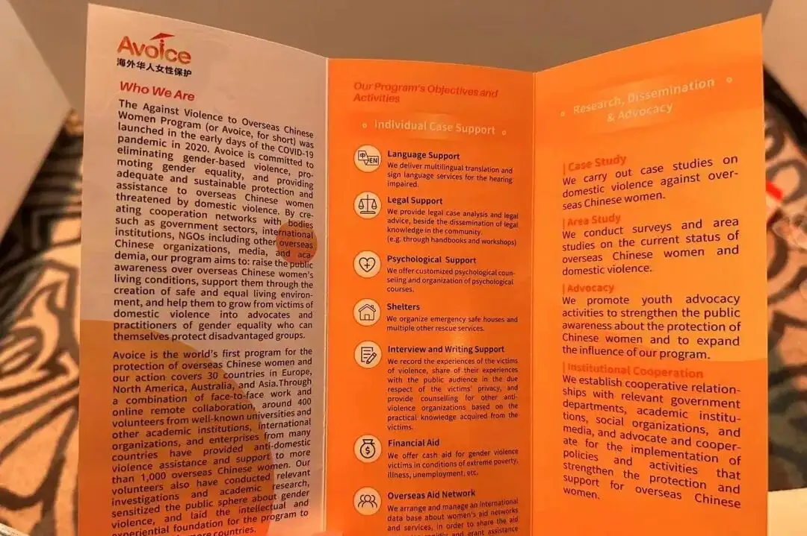
为期两天的峰会共设置了12个分议题，与会嘉宾就“可持续发展、慈善事业和扶贫”、“女性中的终身成就者”、“教育与科学中的女性领导力”、“女性在议会和外交中的领导地位”、“媒体与创意产业中的女性领导力”、“艺术与文化遗产中的女性”、“女性与合作网络的力量”、“女性在促进循环经济和可持续发展中的作用”、“转型期间的性别平衡”、“女性智库与政策顾问”、“女性在体育与旅游业中的领导作用”以及“世界大趋势中的女性”等议题展开了具体的讨论，并且从不同角度分享了各自的经验、成功故事，以及在解决女性面临的挑战和全社会推动性别平等时，政府、机构、学术界、媒体、社会大众等不可或缺的推动作用。
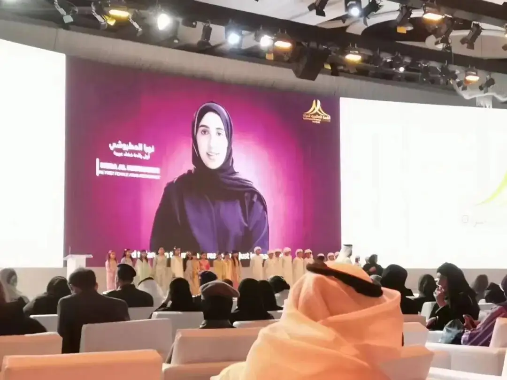
自2020年新冠疫情初期成立以来，Avoice的志愿者团队逐渐壮大，专业度与影响力也得以不断提升。来自世界各地知名高校、国际组织、学术机构及企业的400余名志愿者通过远程协作与线下工作，为超过千名海外华人女性提供了反家暴救助与支持，并开展了相关调查和学术研究，发起了反性别暴力的宣传倡导，为项目在更多国家的复制推广奠定了知识与经验基础。
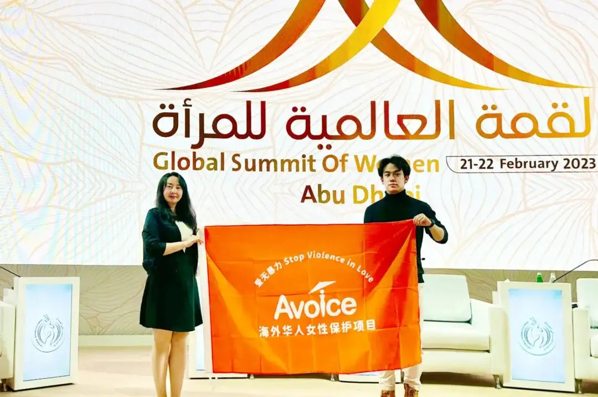
Avoice联合创始人刘锋（图左）
Avoice合作拓展部负责人梅吕辰（图右）
应邀参会的Avoice代表提到，“女性在成长和发展中所面临的各种挑战，都不是独立存在的问题，而是影响到她们发展的各个方面的因素所联合形成的因果关系。因此，在推动性别平等的进程当中，本次峰会中涉及的诸多议题，从各个层次都在倡导社会各界积极联动，呼吁公众对女性问题的关注，从而为女性创造安全、平等的生存和发展环境。”Avoice始终期待与更多的国际组织和平台进行进行交流合作，扩大女性的保护与赋能网络，共建爱与平等的海外华人女性家园。
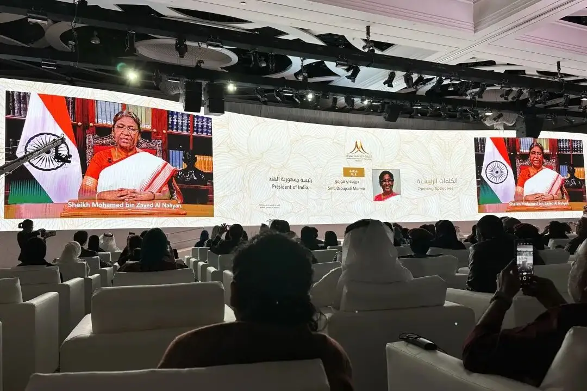
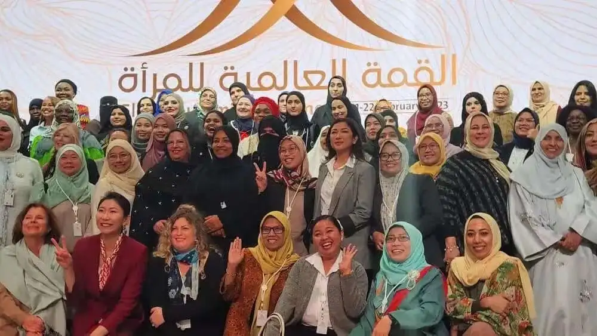
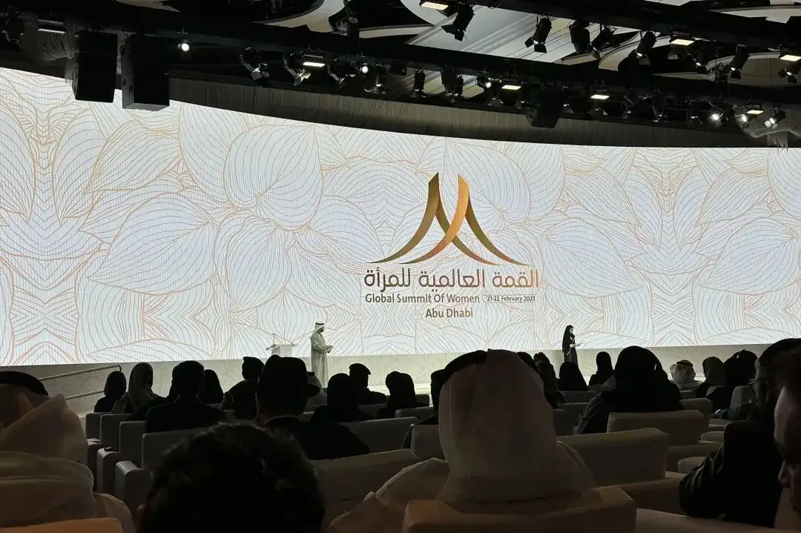
内容来源 I Avoice Team
排版、封面制作 I 缪林汐